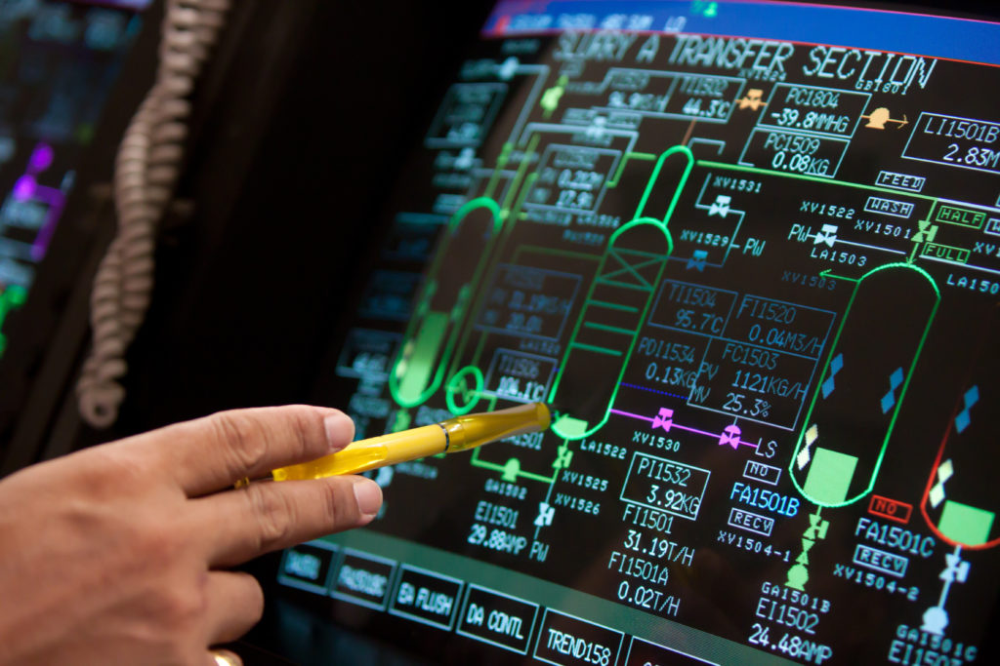
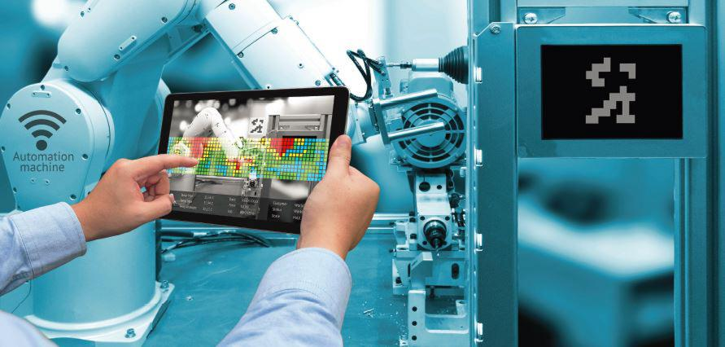

It has been quite a year for industries across the world especially manufacturing and process industries. The emergence of the global pandemic COVID-19 brought about serious disruption to so many industries.
But more importantly, it came to reveal so many weak spots present in leagacy and existing production and control systems, which became more pronounced during the pandemic. One of the noticable effects of the pademic was the fact that people were removed and had to stay away from their
usual point of work, and needed to be physically seperated from eachother.
With many professionals forced to work remotely offsite, the major issue became how to continue business process and facilate remote operations with seperated people.
It became more obvious to users of legacy production and industrial control systems that they lacked or had limited remote visibility and control to production operations.
The lack of these connected devices within plants became a serious issue for most, emphasing the importance of remote connection and data accessibility.
A Better Approach To Production Sytems Design
To enable better agile response to future disruptive occurences and to ensure optimized operations, certain technologies have to be adopted within production systems to enable them function more effectively.
Automation plays a big role in enabling continuous operation of plant machinery at a reduced labor force and cost due the possibility of automating these processes. But it has become more important to be able to get secured access to the plant operations from anywhere and at any time to support the operation from wherever. With remote connection, modern SCADA/HMI can enable control professionals to support production systems from anywhere
These can only be possible when we have properly unified operations (I.T/ O.T Convergence). This is where we take information that sits with I.T, and information that sits with O.T combined together and coordinated as a unified organization as against operating in independent siloes.
Better Control Strategies
There now is more than ever, a greater need for networked control systems across production floor and the utilization of proper manufacturing execution systems (MES). Manufacturing execution systems are like a bridge between ERPs and industrial control systems (ICS). With this we bring information about real-time control up, to a centralized location (onsite or cloud) to take effective decisions based on our ERP put in place and can then push back informed decisions down to the local plant.

These production data can be very useful in plant operation improvement. They bring great value when they are used for things like: creation of digital twin of entire plant, utilized in machine learning and AI algorithms providing various levels of analytics from predictive to prescriptive. These enable what we know as Smart Factories where the factory or production plant is equipped with high level of intelligence and has potent data that can be analyzed to optimize the entire production plant
Smart Factory Initiatives
Industrial control systems are moving into industry 4.0 which is facilitating the digitalization of production lines and it promises to improve performance and profitability. Smart factory initiative involves utilizing emerging digital technologies along with production data to improve plant situational awareness and overall business operation.
Some of these initiatives include:
-
Data Analytics, A.I & Machine learning: Collecting and processing data from the shop floor would require the use of modern devices and control systems that allows for seamless data storage and extraction. Production data analysis along with data optimization tools, brings about actionable intelligence which help us to better understand and manage production assets and enables the optimization of production performance.
With A.I and machine learning capabilities incorporated into industrial automation and control systems, data received from sensors and controllers could be harnessed and could be used to make equipment and machines more intelligent through self-diagnosis, self-correction and predictive capabilities. This can better prevent system down-time and improve asset management. Machine learning also promises solutions such as: preventive maintenance, automated quality check and anomaly detection. -
IIoT, Edge, & Cloud Computing Factories with high level of intelligence are achieved by control systems that provide alot of connectivity and therefore generate rich production data. Plant wide connectivity and visibility is now achievable thanks to the availabilty of data and advanced control system networking and these can be attributed to the presence of industrial internet of things (IIoT) devices enabling enhnaced device and cloud connectivity. This enables machines communicate with each other and better improve the interactions between operators and machines.
Data obtained as a result of these communications, are utilized to gain greater insights into operations and are used to provide a feedback system that improves processes. Some computation on production data might be too complicated to be done on the edge and might have to be pushed to the cloud which give us greater computiong power at scale. However, critical low-latency operations which have to be executed in near real-time will have to be done on the edge which can be carried out by many edge computing devices. -
Augmented Reality AR & Virtual Reaity VR Augmented reality (AR) is a technology that gives us the ability to superimpose computer generated images into our physical reality. With technologies like smart wearable devices, operators can now carry their HMI everywhere they go. Which is a step higher than the mobile HMIs. With this, real-time data can be converted into a graphical process representation and operators can literally see what is going on with their own eyes.
Virtual reality (VR) is a technology that gives us the ability to be immersed into a full computer generated reality which can be digital twins of our plants. This comes in handy for advanced process simulation and modelling of production processes which can save a lot of costs that would have been incurred with real life operations and equipment. -
Cybersecurity: As our plants become highly connected, it becomes of great importance to secure our industrial control systems and facilities. We must carefully plan remote access into manufacturing floors to properly secure production infrastructure protecting both data and systems.
Experts in cyber security must be employed to design secure systems that proactively identify and mitigate cyber-threats. They are there to constantly carry out system checks and threat modelling to ensure our production systems are properly secured. There is also great need to understand data flow and network access points to know how to properly protect plant operations from possible attack points. - Properly define your business usecase: In introducing smart factory technology it is important to always start with clearly defined business objectives and properly establishing what end goal is hoped to be accomplished, before embarking on the transformation journey. This way we ensure real tangible impact on business operations.
- Stay abreast of technology: Technology is rapidily evolving and emerging technologies are being introduced that have potentials to totally transform operations and improve performance and profitability. It is therefore important to have a team of engineers and workforce that can easily adapt to and adopt these technology as they are released, to be able to deliver best in-class automation and digital solution and speed up transformative capabilities
- Willigness to adopt: Mordernization of industrial control system is not all that is required to totally transform production eco-system. Just as with digital transformation in other industry verticals, it would involve also a change of culture and mode of operation to fully tap into the benefits of these initiatives. If sustained progress is to be achieved, an agile mindset is to be adopted to ensure the right strategies for future-proofing production ecosystems